Batalla Del 5 De Mayo De 1862
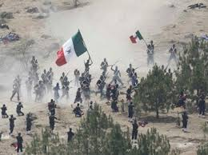
BATALLA 5 DE MAYO
FER BONOLA
BATALLA
Mientras se libraba la batalla, en el Palacio Nacional y en la Ciudad de México en general se vivía un ambiente de tensa espera. Lo último que se sabía de Puebla era el telegrama enviado por Zaragoza hacia las 12:30 del día, en el que avisaba que el fuego de artillería de ambos lados había iniciado. Luego, silencio. Ante la incertidumbre, el gobierno había hecho salir precipitadamente al general Florencio Antillón al mando de los Batallones de Guanajuato, quedando como guardianes de la capital sólo 2,000 hombres del Regimiento de Coraceros Capitalinos y algunos centenares de milicianos pobremente armados. Si las tropas guanajuatenses se perdían, la capital quedaría desprotegida.A las 4:15 de la tarde finalmente se recibieron noticias:
Sobre el campo a las dos y media.— Dos horas y media nos hemos batido. El enemigo ha arrojado multitud de granadas.— Sus columnas sobre el cerro de Loreto y Guadalupe han sido rechazadas y seguramente atacó con cuatro mil hombres. Todo su impulso fue sobre el cerro.— En este momento se retiran las columnas y nuestras fuerzas avanzan sobre ellas. Comienza un fuerte aguacero.— I. Zaragoza8
Zaragoza envió más tarde otro telegrama en el que dijo que los franceses habían iniciado la retirada hacia Amozoc, pero sin mencionar el resultado final de la batalla. Finalmente, a las 5:49 de la tarde se recibió otro parte, dirigido al ministro de Guerra, que causó júbilo (y un gran alivio) en Palacio Nacional:
Las armas del Supremo Gobierno se han cubierto de gloria: el enemigo ha hecho esfuerzos supremos por apoderarse del Cerro de Guadalupe, que atacó por el oriente de izquierda y derecha durante tres horas: fue rechazado tres veces en completa dispersión y en estos momentos está formado en batalla, fuerte de más de 4,000 hombres, frente al cerro de Guadalupe, fuera de tiro. No lo bato, como desearía, porque el Gobierno sabe (que) no tengo para ello fuerza bastante. Calculo la pérdida del enemigo, que llegó hasta los fosos de Guadalupe en su ataque, en 600 o 700 entre muertos y heridos; 400 habremos tenido nosotros. Sírvase vd. dar cuenta de este parte al C. Presidente.— I. Zaragoza

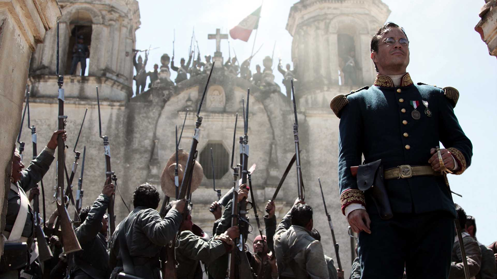
Fuerte De Guadalupe
El saldo final de la batalla fue de 476 muertos y 345 heridos del lado francés, así como 83 muertos, cerca de 131 heridos y 12 desaparecidos para el Ejército de Oriente. A las 7 de la noche del día 6 de mayo arribaron a Puebla el general Antillón y sus tropas; Zaragoza esperaba un nuevo ataque de Lorencez, pero éste, el día 8 de mayo, dispuso la retirada hasta San Agustín del Palmar, siendo "saludado" por la artillería republicana y la Banda de Guerra de los Carabineros, quienes tocaron "Escape".
El 5 de septiembre de 1862, todavía acuartelado en Puebla, el general Zaragoza contrajo tifo y falleció tres días después.10 Lo sustituyó en el mando del Ejército de Oriente el general Jesús González Ortega, quien se encargaría de la defensa de la ciudad ya que se esperaba el regreso de los franceses, reagrupados y con refuerzos, lo cual sucedió en marzo del siguiente año. Los historiadores concuerdan en señalar el talento de Zaragoza como organizador y motivador de sus tropas. Antes de la batalla, las arengó diciéndoles que si bien los franceses eran considerados "los primeros soldados del mundo", ellos eran "los primeros hijos de México", lo cual tuvo tal efecto en la moral de sus soldados que su determinación por defender la plaza ante los invasores compensó sus carencias materiales y de disciplina. Además, no temió tomar decisiones arriesgadas, como prescindir de los 2000 efectivos que O'Horan se llevó para batir a Leonardo Márquez, y en el curso de la batalla actuó con serenidad y efectividad. Se le considera héroe nacional y en su honor, tiempo después, Juárez renombró a la ciudad como Heroica Puebla de Zaragoza.
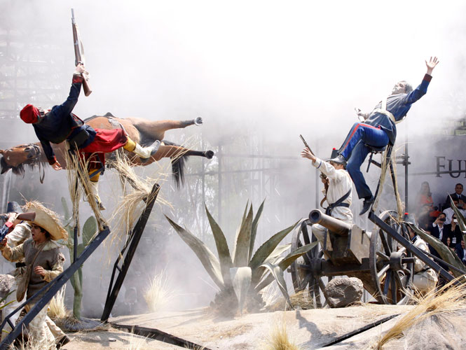

Lugares Principales
Lugares Donde Se Desarrollo La Batalla Del 5 De Mayo De 1862
LOS FUERTES
Los Fuertes Son Conciderados Los Lugares mas importantes donde se dearrollo la Batalla Del 5 De Mayo De 1862
- Los fuertes de Loreto y Guadalupe son unas antiguas edificaciones militares que se encuentran en la ciudad de Puebla. Originalmente se trataba de capillas construidas en lo alto de un cerro Acueyametepec, que fueron reconstituidas a principios del siglo XIX como fortificaciones con finalidades militares
- Los fuertes se ubican en la zona nororiente de Puebla, en un cerro conocido como Acueyametepec durante la epoca prehispanica. En el siglo XVI, frailes franciscanos construyeron una ermita en la cara este del cerro; mas tarde, esa edificacion se expandio a templo bajo la advocacion de San Cristobal, que finalmente paso al control de los padres betlemitas, por lo que a la zona se le conocio como cerro de Belen. En la cara oeste se erigio otro templo, al cual se le asigno la advocacion de la Virgen de Loreto, mientras que el templo originario paso a dedicarse a la Virgen de Guadalupe.
GRITO DE DOLORES
Con excepción del Grito de Dolores, la conmemoración de la Batalla de Puebla es la fecha más significativa del calendario cívico mexicano, al tratarse de una de las escasas victorias ante un ejército extranjero invasor. Simbólicamente, representa la consecución de una gran empresa por parte de los mexicanos, que puede conseguirse si se olvidan las divisiones y se sobreponen éstas a las carencias, como lo demuestra el hecho de que se consiguió la victoria, con valor y dedicación, pese a que se tenía todo en contra: inferioridad numérica y material, la moral disminuida por la tragedia de Chalchicomula, y la simpatía de algunos sectores de las élites y de la clase política hacia los invasores. A cambio, los republicanos respondieron con celeridad a las situaciones que la batalla iba planteando (movilizaron el grueso de sus efectivos del casco urbano de Puebla hacia los fuertes) y supieron sacar ventaja de los errores de los franceses. Semanas antes de la batalla, Juárez había declarado pena de muerte para los mexicanos que se unieran a los invasores, pero también una amnistía a los enemigos de la república en la guerra de Reforma si se unían a él para defender al país de la invasión. El caso más célebre es el del general conservador Miguel Negrete, quien abandonó al partido conservador y se puso a disposición de Zaragoza con la siguiente frase: "Yo tengo patria antes que partido."
El 5 de mayo es una fecha entrañable para los mexicanos; se celebra en las principales ciudades del país con desfiles y verbenas. Ese día se le toma protesta en todo el país a los jóvenes que cumplen el Servicio Militar Nacional.
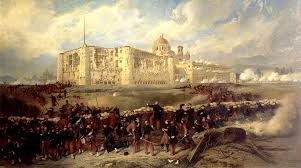
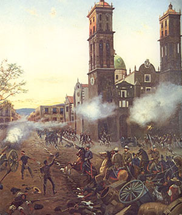
FIESTAS POPULARES
En algunos lugares del país se realizan fiestas populares en las que se recrea la batalla misma o algunos de sus aspectos, como en el caso del Peñón de los Baños, en la Ciudad de México, o en Huejotzingo, en Puebla; sitios en donde se da una peculiar fusión de elementos de carnaval con la fiesta cívica. Incluso en una celebración plenamente religiosa como son las Morismas de Bracho, en Zacatecas, que se hacen tradicionalmente el último fin de semana del mes de agosto, donde miles de personas representan combates entre moros y cristianos, aparecen participantes con uniformes tomados de la batalla de Puebla; por ejemplo, el contingente de los moros adoptó el uniforme de los zuavos franceses; asimismo, el ejército cristiano adoptó el uniforme del regimiento de zapadores, y las bandas de guerra cristianas llevan el uniforme mexicano utilizado el 5 de mayo. Ambas tropas simulan combates al son de marchas francesas.
En los Estados Unidos, el 5 de mayo es el "Día de la Herencia Latina", en la que se celebra la inmigración procedente de México. Ello ha dado pie a que se piense, erróneamente, que el aniversario de la batalla es el día de la Independencia de México.
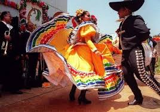
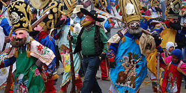
Personajes Principales
Personajes Principales Que Participaron En La Batalla Del 5 De Mayo
PERSONAJES PRINCIPALES
Quienes lucharon en la batalla del 5 de mayo?
- Si hay alguien destacado entre todos ese es Ignacio Zaragoza, Ministro de Guerra y militar que dirigio el Ejercito Mexicano, quienes, acompanados por un grupo de indigenas -conocidos erroneamente como zacapoaxtlas- se rebelaron en las afueras de la ciudad de Puebla contra las tropas francesas, dirigidas por el conde de Lorencez,Charles Ferdinand Latrille, durante la Segunda Intervencion Francesa en Mexico.
Cercada por una profunda crisis economica, la Republica de Mexico, gobernada por Benito Juarez, se vio obligada a suspender la deuda de mas de 80 millones de pesos que acarreaba con Espana, Inglaterra y Francia. Pese a que los dos primeros paises comprendieran la situacion y aceptaran el acuerdo, desbandando sus tropas hasta que la crisis terminara, al Imperio Frances no le convencieron las condiciones. Los espanoles y britanicos se habian percatado, no en vano, del anhelo soterrado de Francia por conquistar Mexico, para erigir una monarquia estable que apoyara su politica colonial. Tras la ruptura de la union tripartita europea, Francia no tardo en emprender su intento de invasion, frustrada por la mencionada Batalla de la Puebla cuando todo parecia perdido para los mexicanos.
los franceses
- A las 9:15 de la mañana del 5 de mayo, los franceses aparecieron en el horizonte.
- avanzando desde la cercana Hacienda de Rementería, cruzando fuego con las guerrillas de caballería que se batían en retirada y que no se replegaron hasta que las líneas francesas estuvieron formadas y listas para avanzar. La batalla se inició en forma a las 11:15 de la mañana, anunciándose con un cañonazo desde el Fuerte de Guadalupe y acompañado por los repiques de las campanas de la ciudad. En ese momento se dio una maniobra sorpresiva: la columna francesa, que venía avanzando en orden de oriente a poniente, se dividió en dos: la primera, compuesta por aproximadamente 4000 hombres y protegida con su artillería, dio un violento viraje hacia la derecha y se dirigió hacia los fuertes; mientras que la segunda columna, compuesta por el resto de la infantería, quedó como reserva.
- Los conservadores Almonte y Antonio de Haro y Tamariz, que acompañaban a los franceses, habían sugerido que el ataque se dirigiera a las inmediaciones del ex Convento del Carmen.
- el sur de la ciudad, tomando como antecedente lo que sucedió en el sitio durante la Guerra con Estados Unidos.
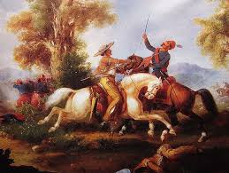
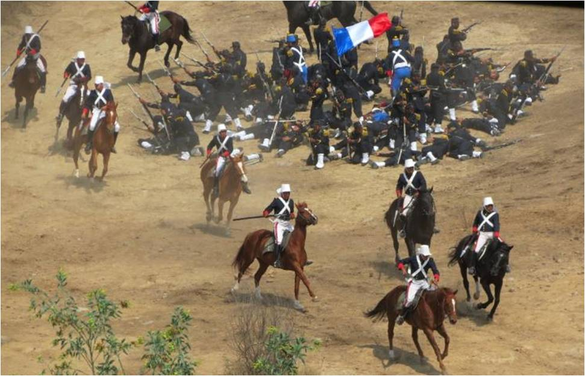
Como empezo la batalla
- Asegurado el paso de Acultzingo, el 2 de mayo de 1862 la columna principal del ejército expedicionario francés salió de San Agustín del Palmar, en Veracruz, para cruzar la Sierra Madre Oriental y dirigirse hacia Puebla, paso obligado para llegar a la capital del país y que era además uno de los bastiones del Partido Conservador, donde esperaban ser recibidos "con una lluvia de rosas", como le aseguró Saligny a Napoleón III en una carta.4 El 3 de mayo por la noche, el general Zaragoza arribó a Puebla, dejando en su retaguardia una brigada de caballería para hostigar a los invasores. Los efectivos del Ejército de Oriente se organizaron por las calles desiertas de la ciudad, ya que la mayoría de la población era partidaria de la invasión
- Zaragoza estableció su cuartel a unos cuantos metros de la línea de batalla, donde estableció el plan para la defensa de la plaza (ver tabla superior), que consistió en concentrar los pertrechos en el sur y oriente de la ciudad, esperando evitar que los franceses alcanzaran al área urbana de Puebla.
- El 4 de mayo, los exploradores mexicanos volvieron con noticias de que una columna de conservadores a caballo, al mando de Leonardo Márquez y José María Cobos, marchaba por la zona de Atlixco para unirse con las fuerzas de Lorencez en el ataque a Puebla. Zaragoza envió una brigada de 2000 hombres bajo el mando de Tomás O'Horán y Antonio Carbajal, con el fin de detenerlo, lo cual lograron. Aunque sus fuerzas habían disminuido, los mexicanos se prepararon para la defensa de Puebla. Contaban con dos baterías de artillería de batalla y dos de montaña, cubriendo los fuertes con 1200 hombres y formando a otros 3500 en cuatro columnas de infantería con una batería de batalla y una brigada de caballería por el lado del camino a Amozoc.
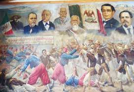
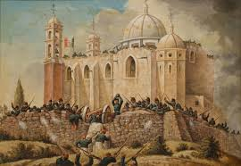
BATALLA DEL 5 DE MAYO
Principales Causas Que Antecedieron A La Batalla Del 5 De Mayo
INICO DE LA BATALLA
Las causas de esta batalla fueron muchas
- Los fuertes de Loreto y Guadalupe son unas antiguas edificaciones militares que se encuentran en la ciudad de Puebla. Originalmente se trataba de capillas construidas en lo alto de un cerro Acueyametepec, que fueron reconstituidas a principios del siglo XIX como fortificaciones con finalidades militares
- Los fuertes se ubican en la zona nororiente de Puebla, en un cerro conocido como Acueyametepec durante la epoca prehispanica. En el siglo XVI, frailes franciscanos construyeron una ermita en la cara este del cerro; mas tarde, esa edificacion se expandio a templo bajo la advocacion de San Cristobal, que finalmente paso al control de los padres betlemitas, por lo que a la zona se le conocio como cerro de Belen. En la cara oeste se erigio otro templo, al cual se le asigno la advocacion de la Virgen de Loreto, mientras que el templo originario paso a dedicarse a la Virgen de Guadalupe.